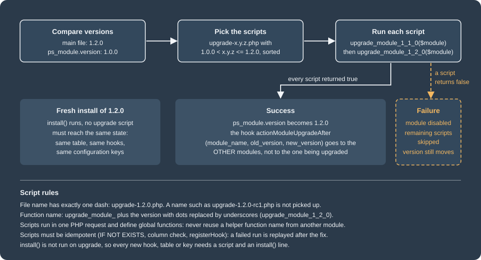
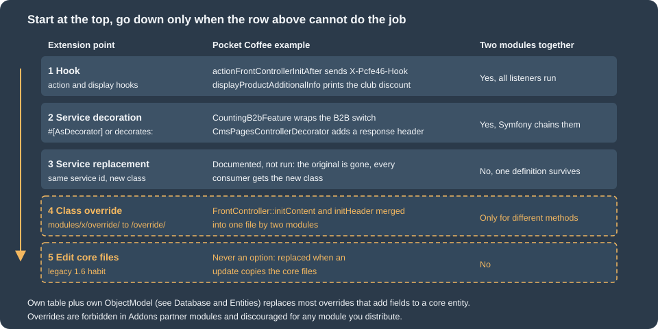

Module Upgrades, Overrides and Decoration
|
This content was generated with the assistance of AI and should be verified against the official documentation before being relied on in production. |
A module is never finished after its first release. The shop that installed version 1.0.0 will one day receive 1.2.0, and
somebody has to turn the database, the configuration and the registered hooks of the first into those of the second.
That is the job of the upgrade scripts. The second half of this page covers the other long-lived corner of module
code: changing something the core does. PrestaShop has an old mechanism for that, the override, which copies a class
into the shop’s override/ folder, and two better ones, hooks and Symfony service decoration. The page explains all of
them: first the upgrade mechanics, then the override mechanics, because stores and books still use them, and then
the alternatives that should be tried first in new code. It was written against PrestaShop 9.2.0 (Symfony 6.4.46, PHP 8.5.12,
MySQL 8.4.13 in the official Docker image) and checked on 2026-10-27. Upgrade scripts are unchanged since PrestaShop 1.5;
the actionModuleUpgradeAfter hook is new in 9.1; #[AsDecorator] needs the Symfony 6.x container of 9.x.
The running example is the Pocket Coffee Coffee Club. The module pcfe46 stores the club discount, prints it on the product
page and in the footer, and goes through three versions: 1.0.0 (a configuration key and one hook), 1.1.0 (a table of club
notes and a footer hook) and 1.2.0 (the key renamed, a column added, the override refreshed). A second module, pcfe46b,
exists only to show what happens when two modules want the same core class. Everything below was executed on the
local shop: the upgrade from 1.0.0 to 1.2.0 with bin/console prestashop:module upgrade, a deliberately failing
script, a fresh install of 1.2.0 compared with the upgraded schema, the override copy, merge, conflict and removal, a
hook replacing the override, a service decoration and a controller decoration. The page builds on
Module Basics (module structure, install() and uninstall()),
Hooks and
Module Services and Admin Controllers, and
Module Translations for the wordings.
The module at its final version
The class below is version 1.2.0 of pcfe46. It is the file a new install sees. Read it as the reference state: every
upgrade script exists to bring an older shop to exactly this state. The class keeps install() and the scripts in
step, because install() is not run again on an upgrade.
<?php
/**
* Pocket Coffee Coffee Club discount: shows the club discount and keeps it in the configuration.
*/
if (!defined('_PS_VERSION_')) {
exit;
}
if (file_exists(__DIR__ . '/vendor/autoload.php')) {
require_once __DIR__ . '/vendor/autoload.php';
}
class Pcfe46 extends Module
{
public function __construct()
{
$this->name = 'pcfe46';
$this->tab = 'pricing_promotion';
$this->version = '1.2.0';
$this->author = 'Pocket Coffee';
$this->need_instance = 0;
$this->ps_versions_compliancy = ['min' => '9.0.0', 'max' => '9.99.99'];
$this->bootstrap = true;
parent::__construct();
$this->displayName = $this->trans('Coffee Club discount', [], 'Modules.Pcfe46.Admin');
$this->description = $this->trans('Shows the Coffee Club discount.', [], 'Modules.Pcfe46.Admin');
}
/**
* A fresh install of 1.2.0 must end in the same state as 1.0.0 upgraded step by step.
*/
public function install(): bool
{
return parent::install()
&& Configuration::updateValue('PCFE46_CLUB_PERCENT', 10)
&& $this->createClubNoteTable()
&& $this->registerHook('displayProductAdditionalInfo')
&& $this->registerHook('displayFooterBefore')
&& $this->registerHook('actionModuleUpgradeAfter')
&& $this->registerHook('actionFrontControllerInitAfter');
}
public function uninstall(): bool
{
return Db::getInstance()->execute('DROP TABLE IF EXISTS `' . _DB_PREFIX_ . 'pcfe46_club_note`')
&& Configuration::deleteByName('PCFE46_CLUB_PERCENT')
&& Configuration::deleteByName('PCFE46_LAST_UPGRADE')
&& parent::uninstall();
}
private function createClubNoteTable(): bool
{
return Db::getInstance()->execute(
'CREATE TABLE IF NOT EXISTS `' . _DB_PREFIX_ . 'pcfe46_club_note` (
`id_note` INT UNSIGNED NOT NULL AUTO_INCREMENT,
`id_customer` INT UNSIGNED NOT NULL,
`note` VARCHAR(255) NOT NULL,
`source` VARCHAR(16) NOT NULL DEFAULT \'web\',
`date_add` DATETIME NOT NULL,
PRIMARY KEY (`id_note`),
KEY `id_customer` (`id_customer`)
) ENGINE=' . _MYSQL_ENGINE_ . ' DEFAULT CHARSET=utf8mb4'
);
}
public function hookDisplayProductAdditionalInfo(array $params): string
{
$this->context->smarty->assign('clubPercent', (int) Configuration::get('PCFE46_CLUB_PERCENT'));
return $this->fetch('module:pcfe46/views/templates/hook/club.tpl');
}
/**
* The alternative to the FrontController override: a hook that runs after the front controller is initialised.
*/
public function hookActionFrontControllerInitAfter(array $params): void
{
header('X-Pcfe46-Hook: 1.2.0');
}
public function hookDisplayFooterBefore(array $params): string
{
return '<p class="pcfe46-footer">Join the Coffee Club</p>';
}
/**
* Fired by Module::upgradeModuleVersion() (9.1+) after a successful upgrade of any module.
*/
public function hookActionModuleUpgradeAfter(array $params): void
{
Configuration::updateValue(
'PCFE46_LAST_UPGRADE',
sprintf('%s %s -> %s', $params['module_name'], $params['old_version'], $params['new_version'])
);
}
}Module upgrades

How PrestaShop decides that an upgrade is needed
Two version numbers matter. The file version is the $this->version literal in the main module file
(modules/pcfe46/pcfe46.php); PrestaShop reads it without loading the class, by parsing the file, and falls back to
config.xml if the parse fails, so keep the assignment a plain string literal. The stored version is the column
version of the table ps_module, written at install time and updated after every upgrade. When the file version is
greater than the stored one, the module is "upgradable": the Module Manager of the back office shows an Upgrade
button, and bin/console prestashop:module upgrade <name> does the same from the console. A deployment that replaces the module folder (git pull, zip upload, composer)
therefore has to be followed by the upgrade action; copying the files does not touch the stored version.
The Update Assistant, which moves a whole shop from one PrestaShop version to another, upgrades the modules it carries as well (it is described with the release process in Testing, Upgrades and Addons); this page is about the module mechanism that every one of those paths calls.
The upgrade scripts
The scripts live in modules/pcfe46/upgrade/. The rules, taken from the module code of 9.2.0 and confirmed by
running them:
| Rule | Detail |
|---|---|
File name |
|
Function |
|
Selection |
Every script whose version is greater than the stored version and not greater than the file version. |
Order |
Sorted by version, lowest first, with PHP’s |
No script at all |
If nothing matches, the stored version is simply set to the file version. |
Bootstrap |
Start every file with |
Global functions |
Scripts are included with |
Not re-run |
|
The docs table of which scripts run is the one to remember:
| Upgrading from | Target version | Scripts executed |
|---|---|---|
1.0.0 |
1.1.0 |
|
1.0.0 |
1.2.0 |
|
1.1.0 |
1.2.0 |
|
Pocket Coffee scripts
Version 1.1.0 adds the table and the footer hook:
<?php
if (!defined('_PS_VERSION_')) {
exit;
}
/**
* 1.1.0: the club notes table and the footer hook.
*/
function upgrade_module_1_1_0($module)
{
return Db::getInstance()->execute(
'CREATE TABLE IF NOT EXISTS `' . _DB_PREFIX_ . 'pcfe46_club_note` (
`id_note` INT UNSIGNED NOT NULL AUTO_INCREMENT,
`id_customer` INT UNSIGNED NOT NULL,
`note` VARCHAR(255) NOT NULL,
`date_add` DATETIME NOT NULL,
PRIMARY KEY (`id_note`),
KEY `id_customer` (`id_customer`)
) ENGINE=' . _MYSQL_ENGINE_ . ' DEFAULT CHARSET=utf8mb4'
) && $module->registerHook('displayFooterBefore');
}Version 1.2.0 renames a configuration key without losing the merchant’s value, adds a column, registers two hooks and refreshes the override (the reason for the last step is explained in Refreshing an override on upgrade):
<?php
if (!defined('_PS_VERSION_')) {
exit;
}
/**
* 1.2.0: rename the configuration key, add a column, listen to upgrades and refresh the override.
*/
function upgrade_module_1_2_0($module)
{
$db = Db::getInstance();
// Rename PCFE46_CLUB_DISCOUNT to PCFE46_CLUB_PERCENT, keeping the merchant's value
$old = Configuration::get('PCFE46_CLUB_DISCOUNT');
if ($old !== false) {
Configuration::updateValue('PCFE46_CLUB_PERCENT', (int) $old);
Configuration::deleteByName('PCFE46_CLUB_DISCOUNT');
}
// Idempotent ALTER: the script may run again after a half-finished upgrade
$hasColumn = (bool) $db->getValue(
'SELECT COUNT(*) FROM information_schema.COLUMNS
WHERE TABLE_SCHEMA = DATABASE()
AND TABLE_NAME = \'' . pSQL(_DB_PREFIX_ . 'pcfe46_club_note') . '\'
AND COLUMN_NAME = \'source\''
);
if (!$hasColumn) {
$db->execute(
'ALTER TABLE `' . _DB_PREFIX_ . 'pcfe46_club_note`
ADD COLUMN `source` VARCHAR(16) NOT NULL DEFAULT \'web\' AFTER `note`'
);
}
// Overrides are copied only at install time: refresh the one shipped by this version
return $module->registerHook('actionModuleUpgradeAfter')
&& $module->registerHook('actionFrontControllerInitAfter')
&& $module->removeOverride('FrontController')
&& $module->addOverride('FrontController');
}Four habits keep scripts safe. Write each statement so that it can run twice (CREATE TABLE IF NOT EXISTS, a
column check before ALTER, registerHook that ignores an already registered hook, Configuration::updateValue), because
a failure part-way through is repaired by fixing the script and running it again. Escape every value that comes from
outside with pSQL() or an (int) cast and every identifier with bqSQL(), and build table names from
_DB_PREFIX_. Never alter core tables: add a table of your own. And keep the work proportional: an ALTER TABLE on a
table with millions of rows inside a web request is a timeout waiting to happen, so large data migrations belong in a
console command that the script only schedules.
Running an upgrade
Start the shop at 1.0.0 (install the module, change the discount to 15 to prove the value survives), put the 1.2.0 files in place and run:
bin/console prestashop:config set PCFE46_CLUB_DISCOUNT --value=15
# ... replace modules/pcfe46 with the 1.2.0 files ...
bin/console prestashop:module upgrade pcfe46The command printed "Update action on module pcfe46 succeeded." After it:
| Check | Result |
|---|---|
|
|
|
|
|
|
Hooks of the module |
|
Response header of any front page |
|
A fresh install of 1.2.0 on another database must end in the same state. The check that matters is a diff of
show create table ps_pcfe46_club_note after the upgrade and after a clean uninstall plus install: the two outputs were
identical (a table id_note, id_customer, note, source, date_add with a primary key and an index on id_customer, in
InnoDB with utf8mb4). Keep that test in the module’s own test suite whenever a script changes the schema.
Hooks around an upgrade
ModuleManager::upgrade (the code behind both the console command and the Module Manager button) does four things in
this order: it disables the hooks of the module for the duration of the upgrade, executes the hook
actionBeforeUpgradeModule (parameters moduleName and source), runs the scripts, and dispatches the upgrade
event. When the stored version has moved, Module::upgradeModuleVersion executes actionModuleUpgradeAfter with the
parameters module_name, old_version and new_version. The hook is new in 9.1 and the 9.1 changelog lists it with
actionModuleEnable, actionModuleDisable and actionConfigurationUpdateValueBefore.
The first consequence was observed by running it: the hooks of a module are disabled while that module is being
upgraded. With the hook method hookActionModuleUpgradeAfter in pcfe46, a plain version bump from 1.2.0 to 1.2.1 did not
write PCFE46_LAST_UPGRADE, while the second module pcfe46b, which listens to the same hook, recorded
pcfe46 1.2.0 -> 1.2.1; the same held for an upgrade that ran a script (pcfe46 1.2.1 -> 1.2.2). Calling the hook by hand
with Hook::exec('actionModuleUpgradeAfter', [...]) ran the handler of pcfe46 normally, so the handler itself is fine.
Use the hook to react to other modules being upgraded (clear a cache, re-register a widget), and put your own
post-upgrade work in the script.
<?php
if (!defined('_PS_VERSION_')) {
exit;
}
class Pcfe46b extends Module
{
public function __construct()
{
$this->name = 'pcfe46b';
$this->tab = 'pricing_promotion';
$this->version = '1.0.0';
$this->author = 'Pocket Coffee';
$this->need_instance = 0;
$this->ps_versions_compliancy = ['min' => '9.0.0', 'max' => '9.99.99'];
parent::__construct();
$this->displayName = 'Coffee Club upgrade watcher';
$this->description = 'Records which modules were upgraded.';
}
public function install(): bool
{
return parent::install() && $this->registerHook('actionModuleUpgradeAfter');
}
public function uninstall(): bool
{
return Configuration::deleteByName('PCFE46B_SEEN') && parent::uninstall();
}
public function hookActionModuleUpgradeAfter(array $params): void
{
Configuration::updateValue(
'PCFE46B_SEEN',
sprintf('%s %s -> %s', $params['module_name'], $params['old_version'], $params['new_version'])
);
}
}When a script fails
A script that returns anything but true stops the chain. In 9.2.0 a test script upgrade-1.3.0.php returning
false produced:
Cannot upgrade module pcfe46. No update has been applied, To prevent any problem, this module has been turned off
and the table showed active = 0 for the module. The remaining scripts do not run, the hook actionModuleUpgradeAfter
is not sent, and the module is disabled so that code written for the new version does not run on half-migrated data.
Two details are easy to miss. First, the stored version was nevertheless set to 1.3.0 (the console and the Module
Manager call Module::upgradeModuleVersion with the file version after the scripts, whatever they returned), so running
upgrade again does nothing and the failed script is never retried. Second, scripts that succeeded before the failing
one stay applied.
Recovering is manual and was tested: fix the script, set the stored version back to the last good one, enable the module and upgrade again.
# the failed step was 1.3.0; the last good one is 1.2.2
echo "update ps_module set version='1.2.2' where name='pcfe46'" | mysql prestashop
bin/console prestashop:module enable pcfe46
bin/console prestashop:module upgrade pcfe46After this the console printed "Update action on module pcfe46 succeeded." and the module was active with version
1.3.0, and pcfe46b recorded pcfe46 1.2.2 -> 1.3.0. Because of this behaviour, test the upgrade path in a copy of
the production database before shipping, back up before upgrading, and make every script idempotent so that the replay
is safe.
Overrides
An override is a class or controller that extends a core class and takes its place. PrestaShop’s autoloader (a class
index in var/cache/<env>/class_index.php) maps every class name to a file; when a file with the same class name exists
under override/, the index points at it, and that file declares class Product extends ProductCore. All the code that
says new Product() therefore gets the override without knowing. A module can ship such a file in its own override/
folder, and PrestaShop merges it into the shop’s override/ at install and removes it at uninstall.
Rules before you write one
Overrides are exclusive: if one module overrides a method, another module cannot override it as well, or must collide with it. The official docs therefore allow overrides only for the modules you build for your own shop, advise against them in modules you distribute, and forbid them in Addons partner modules. The docs themselves disagree: the good-practices page for Addons modules says that overrides are permitted but should be few (two or three at most) and not dangerous, while the overrides page says they are forbidden in partner modules. Treat the stricter rule as binding. The docs also state that creating a custom table and a custom ObjectModel is always preferable to overriding a core class to add fields.
This is the legacy habit. Older books teach PrestaShop through core overrides (Pérez Castaño’s PrestaShop Recipes,
Apress, 2017, targets 1.6, where overriding Product, Cart or Customer was the normal way to change behaviour),
and many stores still carry such code. On 9.x the same job is done with a hook, a decorated service or an own table;
the next sections show how.
Source: PrestaShop devdocs: Overrides
Where override files go
| What you override | File inside the module | Copied to |
|---|---|---|
A core class ( |
|
|
A class in a subfolder ( |
|
|
A front or back office legacy controller |
|
|
The main class of another module |
|
|
A controller class of another module |
|
|
The path of the module-side file is the path of the core file under the shop root: the module code asks the autoloader for
the location of <Class>Core and looks for the same relative path under its own override/ folder. Also, a theme
cannot override a module (the docs say it is not possible and never will be); the opposite, a theme overriding a module’s
templates, is covered in Theme template overrides.
What install does
The module in this page ships this file in override/classes/controller/FrontController.php:
<?php
class FrontController extends FrontControllerCore
{
public function initContent()
{
parent::initContent();
header('X-Pcfe46-Override: 1.2.0');
}
}Installing the module (bin/console prestashop:module install pcfe46) created override/classes/controller/FrontController.php
in the shop with this content. The comment block before every method is added by PrestaShop and is how it knows later
which module owns the method; other comments of the module file are removed.
<?php
class FrontController extends FrontControllerCore
{
/*
* module: pcfe46
* date: 2026-10-27 16:53:37
* version: 1.0.0
*/
public function initContent()
{
parent::initContent();
header('X-Pcfe46-Override: 1.0.0');
}
}Every front page then answered with X-Pcfe46-Override: 1.0.0. The same applies to properties and constants:
each gets its own module/date/version block. The class index is regenerated, and the new file is created together with
an index.php in each folder it needed. If an override file already exists for that class (another module, or the
merchant), the module’s methods are merged into it. If the same method, property or constant already exists in that
file, installation stops.
Two modules, one class
pcfe46b first shipped an override of the same method, FrontController::initContent, with a different header.
Installing it failed, and since reset is an uninstall plus an install, the module ended up uninstalled:
Cannot install module pcfe46b. The override file /var/www/html/modules/pcfe46b/override/classes/controller/FrontController.php conflicts with an existing override in /var/www/html/override/classes/controller/FrontController.php.
The failure printed by the install of 9.2.0 names both files and leaves the existing override untouched. Changing the
second module to override a different method, initHeader, installed without error and produced one merged file with
two blocks, each stamped with its own module name. Both headers were then sent on every page. In other words two
modules can share an overridden class only if they override different methods, properties and constants, and neither
can know that in advance, which is the practical meaning of "exclusive".
Uninstalling pcfe46 removed only its own method block from the shared file; the pcfe46b block stayed. When the
last method was gone (after pcfe46b was uninstalled too), the file and its now empty folder were removed from override/. This is why a manual edit of an override file (adding a method by hand without the
comment block) is dangerous: the uninstall cannot tell which module owns it.
Overriding a module
Because the main class of another module is just a class, pcfe46b can ship override/modules/pcfe45classic/pcfe45classic.php:
<?php
class Pcfe45classicOverride extends Pcfe45classic
{
public function hookDisplayProductAdditionalInfo($params)
{
return '<p class="pcfe46b-wrapped">' . parent::hookDisplayProductAdditionalInfo($params) . '</p>';
}
}After the install, the product page printed the classic badge of Module Translations wrapped in the paragraph. The docs add that you should clear the cache after adding such an override and that the pattern "is not recommended, since the exact usage of a module to be overridden is unknown": the other module’s author may rename the method in the next release.
Refreshing an override on upgrade
Overrides are copied to the shop only by install(), never by an upgrade. When version 1.2.0 changed the header text of the
override, prestashop:module upgrade alone would have left the old file in place and the shop would still send
X-Pcfe46-Override: 1.0.0. That is why upgrade-1.2.0.php calls $module->removeOverride('FrontController') and then
$module->addOverride('FrontController'), both public methods of Module. The test confirmed that after the upgrade
the override file carried version: 1.2.0 in its comment block and the header was 1.2.0.
Console flags and the performance setting
prestashop:module install|uninstall|reset|... <name> --skip-overrides is documented as "Skip installing/uninstalling
module overrides". On 9.2.0, install --skip-overrides really did install the module without creating the override
(no block for the module in the shop file), but uninstall --skip-overrides still removed the module’s override block.
If you need to keep an override after uninstalling a module, copy the file elsewhere first.
If the module’s override/ folder disappears from disk before the module is uninstalled, the override stays behind in
override/classes/, because uninstall reads the module’s own file to know what to remove. Delete the file and
var/cache/<env>/class_index.php by hand in that case.
The Performance page of the back office has a switch "Disable all overrides" (the setting PS_DISABLE_OVERRIDES). In 9.2.0 the
code that reads this key is the back office template lookup of the legacy AdminController; the form clears the class
index when saved. Setting the key to 1 from the console and rebuilding the class index did not stop the class override
above from running (the header was still sent), so do not rely on the switch as a kill switch for a misbehaving class
override; uninstall the module or remove the file from override/ instead, then clear the cache.
Maintenance risks
An override copies the signature and behaviour of a core method at the time it was written. When the core changes the
method, the override silently runs with the old assumptions or breaks with a fatal error. After every PrestaShop
update, rerun the override’s scenarios, and compare the methods you override with the new core version. The
files under override/ are the inventory of what the shop carries; the comment blocks name the module, the date and
the version of every method.
Alternatives to overrides

The official docs name the same ladder as the figure: hooks, extending classes, extending controllers, Symfony service overrides and decorations, and a contribution to the core when none of these is enough. Each was run for Pocket Coffee.
A hook instead of the override
The override above only adds an HTTP header after the controller content is initialised. The hook
actionFrontControllerInitAfter is executed by every front controller at that point, so the same effect needs no
core class at all: the module registers the hook (in install() and in the 1.2.0 script, as shown above) and sends
the header in hookActionFrontControllerInitAfter. The shop answered with X-Pcfe46-Hook: 1.2.0 next to the override’s header. Hooks of the same name
from many modules coexist, so this is always the first choice. When the existing hooks do not expose what you need,
propose a new hook in the core repository (the docs encourage a pull request).
Source: PrestaShop devdocs: Hooks
Subclassing instead of overriding
A class that only adds helpers can extend the core class under its own name (class MyCustomTools extends Tools) and be
used from the module’s own code. Nothing is replaced, so every other module keeps seeing the original, and the
class lives in the module’s src/ folder. Likewise, a controller of the module can extend a core controller to reuse its
features. This was not run here, because it needs no PrestaShop mechanism.
Decorating a service
PrestaShop 9 builds a large part of the back office on the Symfony container, and a module can modify the container
definition through its config/services.yml. Replacing a service means declaring your own definition under the
existing id: the original disappears and every consumer gets the replacement. Decorating it means declaring a new
service that wraps the old one: the container gives the decorator the original service under the id
<decorator id>.inner, and every consumer of the original id gets the decorator.
The documentation example decorates prestashop.core.b2b.b2b_feature. On 9.2.0 that id is an alias that is deprecated
since 9.0 (the container definition says so) pointing at the class id PrestaShop\PrestaShop\Core\B2b\B2bFeature,
which is final and implements FeatureInterface. The real, supported id is the class, and the decorator must
implement the interface, not extend the class. The decorator counts how often the shop asks whether B2B is active, and
declares itself with the Symfony attribute (the core uses the same attribute in its own API code):
<?php
declare(strict_types=1);
namespace PrestaShop\Module\Pcfe46\Decorator;
use PrestaShop\PrestaShop\Core\Feature\FeatureInterface;
use Symfony\Component\DependencyInjection\Attribute\AsDecorator;
use Symfony\Component\DependencyInjection\Attribute\AutowireDecorated;
/**
* Wraps the B2B feature switch and counts how often the shop asks whether it is active.
*/
#[AsDecorator(decorates: 'PrestaShop\PrestaShop\Core\B2b\B2bFeature')]
final class CountingB2bFeature implements FeatureInterface
{
private static int $calls = 0;
public function __construct(
#[AutowireDecorated]
private readonly FeatureInterface $inner
) {
}
public static function calls(): int
{
return self::$calls;
}
public function isUsed()
{
return $this->inner->isUsed();
}
public function isActive()
{
++self::$calls;
return $this->inner->isActive();
}
public function enable()
{
$this->inner->enable();
}
public function disable()
{
$this->inner->disable();
}
public function update($status)
{
$this->inner->update($status);
}
}A small back office controller shows that a consumer receives the decorator. It asks for the service by its class id but types the parameter with the interface, because a consumer that type-hints the final class would reject the decorator:
<?php
declare(strict_types=1);
namespace PrestaShop\Module\Pcfe46\Controller;
use PrestaShop\Module\Pcfe46\Decorator\CountingB2bFeature;
use PrestaShop\PrestaShop\Core\B2b\B2bFeature;
use PrestaShop\PrestaShop\Core\Feature\FeatureInterface;
use PrestaShopBundle\Controller\Admin\PrestaShopAdminController;
use Symfony\Component\DependencyInjection\Attribute\Autowire;
use Symfony\Component\HttpFoundation\JsonResponse;
class DiagnosticsController extends PrestaShopAdminController
{
public function indexAction(
#[Autowire(service: B2bFeature::class)]
FeatureInterface $b2b
): JsonResponse {
$active = $b2b->isActive();
return new JsonResponse([
'service_class' => $b2b::class,
'b2b_active' => $active,
'calls_in_this_request' => CountingB2bFeature::calls(),
]);
}
}Source: PrestaShop devdocs: Services
services:
_defaults:
public: false
autowire: true
autoconfigure: true
PrestaShop\Module\Pcfe46\Controller\DiagnosticsController: ~
# Decoration through the #[AsDecorator] attribute on the class
PrestaShop\Module\Pcfe46\Decorator\CountingB2bFeature: ~pcfe46_diagnostics:
path: /pcfe46/diagnostics
methods: [GET]
defaults:
_controller: 'PrestaShop\Module\Pcfe46\Controller\DiagnosticsController::indexAction'
_legacy_controller: AdminPcfe46
_legacy_link: AdminPcfe46After bin/console cache:clear, bin/console debug:container 'PrestaShop\PrestaShop\Core\B2b\B2bFeature' reported the
class id as a private alias of PrestaShop\Module\Pcfe46\Decorator\CountingB2bFeature, with the tag container.decorator
(id and inner service named), and listed the core consumers (CustomerType, the customer grid factory, the customer form
data provider and handler) among its users. The route returned:
{"service_class":"PrestaShop\\Module\\Pcfe46\\Decorator\\CountingB2bFeature","b2b_active":false,"calls_in_this_request":1}and the Customers page, which consumes the same service, still rendered. The same decoration can be written without the
attribute, in YAML, with decorates: and arguments: ['@.inner'].
The caveats from the docs are real. The decorator must stay compatible with every consumer: if a consumer
type-hints an interface, implement it; if it type-hints a class that is not final, extend the class. If you need to know
the id of a service, bin/console debug:container <part of the name> lists it. A replacement (same id, new class) is
documented but was not run: it removes the original, so only one module can do it.
Decorating a core controller
Back office controllers are services, so they can be decorated too. The docs show the pattern for the
controller; on 9.2.0 the action has a long signature with autowired attributes, so the decorator extends
CmsPageController to keep the type, receives the original as .inner, repeats the signature of the action it wants to
change (the route resolves the action arguments from the decorator’s method) and delegates:
<?php
declare(strict_types=1);
namespace PrestaShop\Module\Pcfe46\Decorator;
use PrestaShop\PrestaShop\Core\CMS\CmsPageViewDataProviderInterface;
use PrestaShop\PrestaShop\Core\Grid\GridFactoryInterface;
use PrestaShop\PrestaShop\Core\Search\Filters\CmsPageCategoryFilters;
use PrestaShop\PrestaShop\Core\Search\Filters\CmsPageFilters;
use PrestaShop\PrestaShop\Core\Util\HelperCard\DocumentationLinkProviderInterface;
use PrestaShopBundle\Controller\Admin\Improve\Design\CmsPageController;
use PrestaShopBundle\Security\Attribute\AdminSecurity;
use Symfony\Component\DependencyInjection\Attribute\Autowire;
use Symfony\Component\HttpFoundation\Request;
use Symfony\Component\HttpFoundation\Response;
/**
* Decorates the "Design > Pages" controller: same action, plus a response header.
*/
class CmsPagesControllerDecorator extends CmsPageController
{
public function __construct(private readonly CmsPageController $inner)
{
}
#[AdminSecurity("is_granted('read', request.get('_legacy_controller'))")]
public function indexAction(
CmsPageCategoryFilters $categoryFilters,
CmsPageFilters $cmsFilters,
Request $request,
DocumentationLinkProviderInterface $helperBlockLinkProvider,
#[Autowire(service: 'prestashop.core.cms_page.data_provider.cms_page_view')]
CmsPageViewDataProviderInterface $cmsPageViewDataProvider,
#[Autowire(service: 'prestashop.core.grid.factory.cms_page_category')]
GridFactoryInterface $cmsCategoryGridFactory,
#[Autowire(service: 'prestashop.core.grid.factory.cms_page')]
GridFactoryInterface $cmsGridFactory,
): Response {
$response = $this->inner->indexAction(
$categoryFilters,
$cmsFilters,
$request,
$helperBlockLinkProvider,
$cmsPageViewDataProvider,
$cmsCategoryGridFactory,
$cmsGridFactory
);
$response->headers->set('X-Pcfe46-Decorated', 'cms-pages');
return $response;
}
} # Decoration through the decorates key: the original controller is injected as .inner
PrestaShop\Module\Pcfe46\Decorator\CmsPagesControllerDecorator:
decorates: PrestaShopBundle\Controller\Admin\Improve\Design\CmsPageController
arguments: ['@.inner']Requesting improve/design/cms-pages/ as the administrator rendered the normal "Pages" screen and the response carried
X-Pcfe46-Decorated: cms-pages. No routing change was needed. The routes of the page still point at
CmsPageController::indexAction; the container returns the decorator for that service id. The security attribute of the
decorated action is repeated on the decorator so that the page keeps its permission check; whether it would be inherited
without it was not tested. If you need to change the route itself, the docs give two further tools: remapping a route
to a controller of your module (declare the same route name in config/routes.yml with _disable_module_prefix: true)
and replacing the controller service entirely, which the docs advise against unless you rewrite the whole controller.
Neither was run.
Theme template overrides
A theme may replace a module’s template without touching the module: put a file at the same relative path under
themes/<theme>/modules/<module>/. For pcfe46 that is
themes/hummingbird/modules/pcfe46/views/templates/hook/club.tpl:
<p class="pcfe46-club pcfe46-themed">Club members save {$clubPercent|intval}% on beans</p>After clearing the compiled Smarty templates (var/cache/<env>/smarty/compile and .../cache) the product page
printed this paragraph instead of the module’s. Without that clearing, the page still showed the module’s original
output. This is the supported way for a theme to change what a module displays, and a module cannot do the opposite to a
theme.
Choosing
| Need | Use |
|---|---|
Run code when something happens, or print content in a hook position |
A hook ( |
Change a Symfony service or a back office controller |
Service decoration; replacement only if you own the whole behaviour |
Add fields to a core entity |
Own table and own ObjectModel, or the 9.2 Extra Properties (see Database and Entities) |
Change what a module prints |
A template override in the theme |
Change a legacy core class that has no hook |
A class override only in your own shop, with one module per class, and with a plan for every PrestaShop update |
Distribute on Addons |
No overrides |
What was run and what was not
On PrestaShop 9.2.0 in Docker the following was executed and the outputs quoted above are real: install, upgrade
(1.0.0 to 1.2.0 with two scripts, then version bumps with and without a script), a failing script and its recovery, a fresh
install compared with the upgraded schema, override install, merge, conflict, uninstall and --skip-overrides,
the module override, a hook alternative, the B2B decoration and the controller decoration, the theme template
override, and php -l, lint:yaml and the legacy-link linter on the module. Not run: the Module Manager Upgrade button
(browser), the Update Assistant, a script that fails after another module already defined the same function in
the same request, an overridden controller of the back office, a service replacement, YAML decorates: on the
B2B service, and PHPStan or php-cs-fixer on these modules.